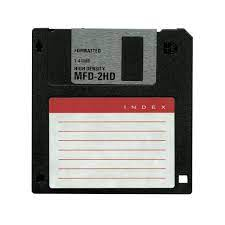

En informatique, le stockage désigne le moyen ou l'endroit où les données sont conservées sous forme électromagnétique ou optique, afin d'être ensuite mise à la disposition d'un processeur.
Le stockage informatique a subi plusieur amelioration au cours du temps et on peut divisés ces technologies de stockage en plusieurs génération: Première génération:
Les supports physiques, avec la carte et le ruban perforé étaient l'un des premiers moyen de stockage informatique.En effet ils avaient une assez petite capacité mais cela était suffisant pour les besoins de cette époque. Ces supports sont obsolètes depuis la fin des années 1990 . Deuxième génération:
Les supports magnétiques, comme la bande magnétique, la cassette, le disque dur, la CD.Cette technologies était plus ou moins mécanique mais elles restent néanmoins un support privilégié de sauvegarde et d'archivage des données en raison de leur très grande capacité, de leur faible cout et de leur facilité de transport. Ainsi, en 2008, les bandes ou cartouches accueillent couramment plus de 200 gigaoctets et plusieurs téraoctets en 2016. Avec l'arrivée des clés USB, entre autres, les disquettes voient leur production s'arrêter en 2010 après presque un demi-siècle d'exploitation.  Troisième génération:
Les supports optiques, tels que le disque compact (CD, CD-R ou CD-RW), le DVD (DVD-Rom ou DVD-RW).
Cette technologies a généralisé surtout entre 2009 et 2015 avec l'arrivé des des films et des musiques vendu en forme de CD ou DVD. Cette technologie est toujours présente mais est peu utlisé après l'arrivé de la dernière génération.
Quatrième génération:
La quatrième et dernière génération est marquée par l'arrivée des clés USB, des cartes SD puis leur améliorations en carte MicroSD et finalement les cartes SSD. ET c'est cette génération à laquelle on va s'intéresser.
Types de stockage:
En notre époque, le type de stockage le plus utilisé est les disques durs (HDD) avec les cartes SSD qui s'intègrent de plus en dans nos micro-ordinateurs: Les disques durs:
Un disque dur (parfois abrégé DD ; en anglais, hard disk drive, HDa ou HDDb) est une mémoire de masse à disque tournant magnétique utilisée principalement dans les ordinateurs, mais également des lecteurs/enregistreurs de DVD de salon, des consoles de jeux vidéo, etc.
Inventé en 1956, le disque dur a fait l'objet d'évolutions de capacité et de performances considérables, tout en voyant son coût diminuer, ce qui a contribué à la généralisation de son utilisation, particulièrement, dans l'informatique. Les Cartes SSD:
En informatique, un SSD (de l'anglais solid-state drive), voire disque SSD1, disque électronique1, disque statique à semi-conducteurs2 ou plus simplement disque à semi-conducteurs1 au Québec, est un matériel informatique permettant le stockage de données sur de la mémoire flash.
N'ayant aucune pièce mécanique en mouvement, un SSD est matériellement plus résistant qu'un disque dur ; en effet, les plateaux de ces derniers sont de plus en plus souvent en verre depuis 2003 (quoi que encore très souvent en alliages d'aluminium), mais surtout, du fait que cette technologie implique l'interaction mécanique entre éléments de stockage (plateaux) et éléments d'accès (têtes de lecture/écriture), des chocs même légers peuvent entraîner des égratignures de la surface magnétique, ou une détérioration des éléments d'accès, donc des pertes de données voire une panne définitive. Au contraire, les SSD sont dépourvus d'éléments mobiles, ce qui leur confère une résistance aux chocs et aux vibrations bien supérieure. Les SSD surclassent par ailleurs les disques durs au niveau des performances.
Et les carte SSD connaissent plusieurs variétés: SSD ,SSD Nvme, SSD Nvme 2.0 .
Meilleurs SSD et HDD:
HDD
Niveau qualité: WD Or HDD -8To- to -18To- SATA 256 MB 3.5 Inch.
Marque Western Digital.
Facteur de forme disuqe dur.
Capacité du stockage numérique 8000 Go.
Interface matérielle SATA 6.0 Gb/s.
Connexion 1x 15 broches, 1x SATA/600.
Taux de transfert de données Lire 255 Mo/s.
Conception 3,5 pouces.
Prixen euro: 304 €.
Niveau qualité prix: DD SEAGATE 3.5" Barracuda 2To 7200T.
Marque Seagate.
Facteur de forme Disque dur.
Capacité du stockage numérique 2000 Go.
Interface matérielle SATA 6.0 Gb/s.
Vitesse de lecture 6 Gigabytes Per Second.
Compatibilité du périphérique Ordinateur, Ordinateur Portable.
Taille du cache 256 Modificateur inconnu.
SSD
Niveau qualité: Corsair Force Series MP400 8To.
Marque Corsair.
Capacité du stockage numérique 8000 Go.
Interface matérielle Solid-state drive.
Vitesse de lecture 3400 Megabytes Per Second.
Niveau qualité prix: Samsung SSD Interne 970 EVO Plus NVMe M.2 (500 Go).
Marque Samsung
Facteur de forme 2.5 inches
Capacité du stockage numérique 500 Go
Interface matérielle PCI Express x4
Vitesse de lecture 3500 Megabytes Per Second
Vitesse d'écriture 3200
Compatibilité du périphérique Ordinateur
Taille du cache 512 Modificateur inconnu
 Vitesse de lecture 6 Gigabytes Per Second.
Vitesse de lecture 6 Gigabytes Per Second.